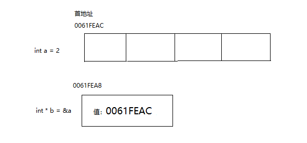
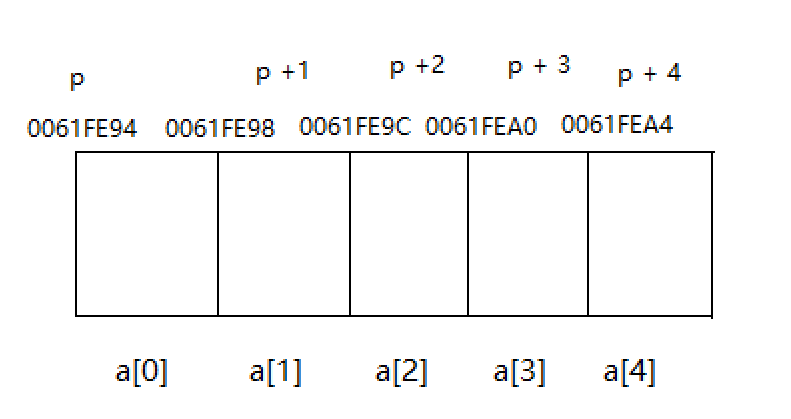

在谈论指针之前，我们先看看地址。地址是指存储单元的编号。我们可以通过这个地址找到他所对应的存储单元，然后进行操作。可以说，地址指向某一变量的存储单元，所以，将地址形象话的称为“指针”。那么指针到底是什么呢？ 从根本上来看指针是一个值为内存地址的变量（或者数据对象）
在计算机中每一个变量都存储在内存中，每一个变量都有其对应的地址空间，我们可以通过取地址符来得到它所对应的地址。这就是一元运算符“&”的作用。假如有一个int型的变量a，我们可以通过&a得到他的地址。
看如下程序：
```
int main(void)
{
int a = 2;
printf("%d %p\n", a, &a);
}
```
上面的程序对于大家来说是既熟悉又陌生，这里来说明一下。
%p表示的是输出地址的说明符。
假设b的地址是0061FEAC（PC中地址通常使用16进制形式表示），那么上面的程序的输出结果是：
2 0061FEAC
总结：地址运算符&是单目运算符，也称为一元运算符，&运算符可以获取变量的地址。
通过最开始的讲解我们已经了解了指针，也知道了指针是一个值为内存地址的变量。也就是说我们可以将通过&运算符取出的地址赋给一个变量。
下面我们来讲解一下如何申请这样的变量。
声明指针变量时必须声明指针所指向的变量类型，因为不同的变量类型占用不同大小的存储空间。int和float可能占用相同大小的存储空间，但是他们所存储的数字去大不相同。所以我们可以使用指针变量所指向的变量类型 + “*” + 变量名来声明一个变量。
上面说了很多，可以理解起来不太容易，下面是一些指针变量声明的示例：
int * a; // a是指向int类型变量的指针
char * b; // b是指向char类型变量的指针
float * c; // c是指向float类型变量的指针
a 是指向int型变量的指针指的是a可以接受一个int型变量的地址。
还有个可能不理解的地方是指针变量。
相信大家有个疑惑，我们说，a是指向int型变量的指针，那么a到底是什么类型呢？a的值是一个地址，在大多数的系统中，地址是由一个无符号的整数表示的。但是不要把指针认为是整数类型。
前面讲了好多，都是一些理论，现在来讲解一些简单的应用。
现在可以声明一个指针变量，并且可以得到一个变量的地址进行复制，如下：
int a = 2;
int * b = &a;
指针b存储了a的地址，假设现在不知道b所储存的地址是哪个变量的，而想得到它的值，该怎么办呢？
现在就该间接运算符*登场了。间接运算符“*”，有时也称解引用符。作用是找到某个指针变量上的地址，然后对这个地址进行取值等操作。
看如下程序：
```
int main(void)
{
int a = 2;
int *b = &a;
int c = *b;
printf("c = %d\n", c);
return 0;
}
解引用符的作用不止于此，看下面程序：
int main(void) { int a = 2; int *b = &a; printf("a = %d\n", a); b = 3; printf("a = %d\n", a); return 0; } ``` a的值通过b的赋值操作被改变了。上面的这种用法在函数中的引用比较多。
C语言设置了一个指针常量“NULL”，空指针不指向任何存储单元。空指针可以赋给任何类型的指针变量。
之前说过，每一个变量都有其对应的地址空间，我们可以通过取地址符来得到它所对应的地址。那么也可以通过取地址符取得它的地址。看如下程序： ```
int main(void) { int a = 2; int * b = &a; printf("a的地址是：%p, 指针变量b的地址是：%p", &a, &b);
return 0;
} 结果： a的地址是：0061FEAC, 指针变量b的地址是：0061FEA8 ``` a和b的关系入下图所示：

注：指针变量在32位系统中占4个字节，在64位系统（更准确的说是编译器）中占8个字节。这个可以通过sizeof()函数计算。
既然也可以获得指针变量的值，那么该将这个值赋给谁呢？看下面的一行代码。
int ** a;
上面的这行代码说明a是指向int型指针变量的指针。它的作用是改变指针变量的值。看如下程序：
```
int main(void) { int a = 2; int b = 12; int * c; int ** d; c = &a; printf("c = %d\n", c); d = &c; // 将c的地址赋给d d = &b; // 通过d改变c的值 printf("c = %d\n", c); printf("d = %p, c = %p, &b = %p\n", d, c, &b); printf("d = %d, *c = %d, b = %d\n", **d, *c, b);
return 0;
} 结果： *c = 2 *c = 12 *d = 0061FEA4, c = 0061FEA4, &b = 0061FEA4 **d = 12, *c = 12, b = 12
可以得到如下等式：
*d == c
*d == b
```
a是一个指向int型指针变量的指针，可以这样理解int * (* a)，' a'说名a是一个指针，int *说明a所指向的是一个int型的指针。
数组在内存中占用的是一段连续的内存空间，并且数组名是数组首元素的地址。也就是说，如果a是一个数组，那么则会有a == &a[0]。
指针可以存放变量的地址，当然也可以存放数组元素的地址。
a和&a[0]都可以表示数组首元素的地址，我们可以将其赋给指针变量，然后可以通过这个指针进行操作，看如下程序：
```
int main(void)
{
int a[5] = {0, 1, 2, 3, 4}, i;
int * p = a;
if (a == &a[0]) {
for (i = 0; i < 5; i++) {
printf("a[%d] = %d &a[%d] = %p, p = %p p = %d\n", i, a[i], i, &a[i], p,p);
p = p + 1;
}
}
return 0;
}
上面的程序验证了数组名和数组首元素的地址相同。
大家可能感到奇怪的地方是p加一之后为什么会指向下一个数组元素。
在大多数系统中int类型的变量占4个字节。而指针加1指的是增加一个储存单元，对于上面的程序而言，p每增加1增加4个字节。并且因为数组在内存中占用的是一段连续的存储空间，所以上面的程序的一个结果如下所示：
a[0] = 0 &a[0] = 0061FE94, p = 0061FE94 *p = 0
a[1] = 1 &a[1] = 0061FE98, p = 0061FE98 *p = 1
a[2] = 2 &a[2] = 0061FE9C, p = 0061FE9C *p = 2
a[3] = 3 &a[3] = 0061FEA0, p = 0061FEA0 *p = 3
a[4] = 4 &a[4] = 0061FEA4, p = 0061FEA4 *p = 4
```
第一行中p = 0061FE94，在p+1之后的第二行中p = 0061FE98，刚好相差4。

指针在C语言中非常重要，但是也同样是非常危险。在C语言中如果一个变量没有被赋值，而去使用时，它会是一个随机的值，例如： ```
int main(void) { int a; printf("%d\n", a); } ``` 每次运行的结果都会不一样，指针变量也不例外。那么如果直接使用这个变量时可能会发生一个无法预知的事情。
注：在全局变量中的系统会将一个没有初始化的变量初始化为0，指针变量初始化为NULL
在比如上面的p指针可以直接加5访问到数组之外的内存... 下面和说一下指针与二维数组。
其实没有真正的二维数组，二维数组在内存中也是存储在一段连续的存储空间中。 看如下程序。 ```
int main(void)
{
int array[3][3] = {
{1, 2, 3},
{4, 5, 6},
{7, 8, 9}
};
int i;
int * ptr = &array[0][0];
for (i = 0; i < 9; i++) {
printf("%d ", *(ptr + i));
}
printf("\n");
return 0;
}
结果：
1 2 3 4 5 6 7 8 9
从上面的这段程序中可以看出二维数组正真的存储方式。

接下来会通过一种比较神奇的方法来访问二维数组，看下面的程序：
int main(void)
{
int array[3][3] = {
{1, 2, 3},
{4, 5, 6},
{7, 8, 9}
};
int i, j;
for (i = 0; i < 3; i++) {
for (j = 0; j < 3; j++) {
printf("%d ", ((array + i) + j));
}
printf("\n");
}
return 0;
}
想要理解这一点并不容易，可以这样理解：
array[1] = *(array + 1)
array[2][1] = ((array + 2) + 1)
```
其实，[]也被称为下标运算符。对于上面的解释起来比较麻烦，所以这里不多做解释。
数组指针和指针数组是两个比较容易混淆的概念。下面来解释下他们分别是什么意思。
数组的元素可以是各种类型，当然也可以是指针类型，如果每个数组元素的类型都为指针，则称该数组为指针数组。换句话说，指针数组是由指针变量构成的数组。一维指针数组的定义形式如下：
类型名 * 数组名[数组长度];
例如：int * a[5];
为何是上面的这种定义呢？这是因为[]的优先级比*高，所以首先a是一个大小为5的数组，该数组中元素的类型为int *。
一个简单的小例子：
```
int main(void) { int a[5] = {1, 2, 3, 4, 5}; int * array[5] = {&a[0], &a[1], &a[2], &a[3], &a[4]}; int ** ptr = array; int i; for (i = 0; i < 5; i++) { printf("%d ", **ptr); // *p == &a[i]; ptr++; } } ```
指针变量的类型可以是任何类型，当然也可以数组类型，一个指向数组的指针称为数组指针。它的定义形式如下：
类型名 (* 变量名)[数组长度];
下面的程序是一个小例子：
```
int main(void)
{
int array[3][3] = {
{1, 2, 3},
{4, 5, 6},
{7, 8, 9}
};
int i, j;
int (*ptr)[3] = array;
ptr = array;
for (i = 0; i < 3; i++) {
for (j = 0; j < 3; j++) {
printf("%d ", ((ptr + i) + j));
}
printf("\n");
}
return 0;
}
```
上面的这段程序对于初学的你来说是难以理解的，但是当你掌握这个的时候说明你已经初步的掌握指针了。
对于这句int (*ptr)[3] = array;，可以这样理解：
首先* ptr表明ptr是一个指针，然后接下来就是类型了。假设现在有一个int a[3] = {1, 2, 3}，其中a的类型是数组，那么可以这样认为a的类型是int[3]。